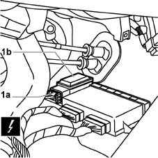
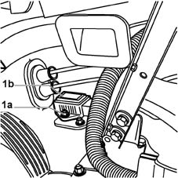

3350E30 lateral acceleration and yaw sensor r r
- Path
- Procedures > 33 BRAKING SYSTEM > 3350 DRIVE CONTROL' > 3350E vehicle direction control system vdc > 3350E30 lateral acceleration and yaw sensor r r
- Kind
- repair procedure (removal / refitting; the operation number is the code)
- Applies to
- all engines; all production periods
- Interactive page
- https://sloeber94.github.io/elrnDB-fMltpl/en/#/2891658
Applies to: all engines; all production periods
 Removing
Removing
 Refitting
RefittingDisconnect the battery negative terminal.
 | Name | Connector |
|---|---|---|
- | Battery |
1. Disconnect the electrical connection (1a) from the acceleration and yaw sensor (1b).
| Name | Connector |
|---|---|---|
1a | Yawing sensor |

Applies to: all engines; all production periods
1. Undo the two fixing nuts (1a) and remove the sensor (1b) from the centre tunnel.

Applies to: all engines; all production periods
Refitting
RemovingPosition the acceleration and yaw sensor and tighten the fixing nuts.
Connect the sensor electrical connection.
| Name | Connector |
|---|---|---|
- | Yawing sensor |
Connect the battery negative terminal.
| Name | Connector |
|---|---|---|
- | Battery |